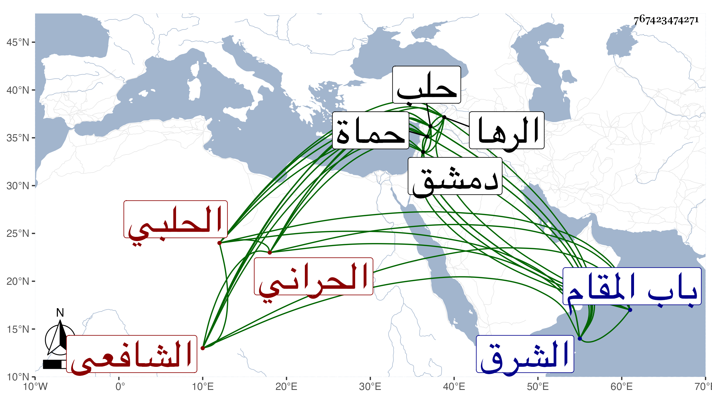

0902Sakhawi.DawLamic.ITO20230111-ara1.EIS1600.767423474271
Biography ID: 767423474271
643
محمد بن سلمان بن عبد الله الشمس الحراني ثم الحلبي الشافعي ويعرف بابن الخراط . أصله من الشرق وقدم به أبوه وهو طفل فسكن حماة فولد له ابنه هذا فتعانى أولا صنعة الخرط ثم تركها وأقبل على العلم فأخذ عن الشرف يعقوب خطيب القلعة والجمال أبي المحاسن بن خطيب المنصورية بحماة وزوجه أخته وبدمشق عن الزين عمر بن مسلم القرشي ، ودأب حتى حصل من كل فن طرفا جيدا ، وقدم حلب بعد التسعين فنزل بالمدرسة الصلاحية وناب في الحكم عن ناصر الدين محمد الحموي ابن خطيب نقيرين ثم عن الشرف أبي البركات الأنصاري ثم عزله وولاه قضاء الرها فأقام بها مدة ثم ولي قضاء باب بزاعا فكان يتردد إليها من حلب فلما مات الشمس بن النابلسي استقر في نيابة القضاء بحلب عوضه ثم ولاه القاضي نصف تدريس النورية التقوية شريكا لأولاد النابلسي وباشرها أصلا ونيابة ثم استقل بجميعه بعد ، واستمر يفتي ويدرس بل خطب بالجامع الكبير نيابة عن ابن الشرف الأنصاري ، وكان فقيها فاضلا دينا ذكيا شديدا في أحكامه مع حدة في خلقه جفاه بعض الناس لها ، وممن أخذ عنه ابن خطيب الناصرية وترجمه ، وتبعه شيخنا في إنبائه باختصار وقال إنه ولي عدة تداريس . مات في ليلة الأربعاء سابع ربيع الأول سنة ست بفالج عرض له قبل بيوم واضطراب وإسكات . وصلي عليه من الغد ثم دفن جوار قبر الشهاب الأذرعي خارج باب المقام رحمه الله .
